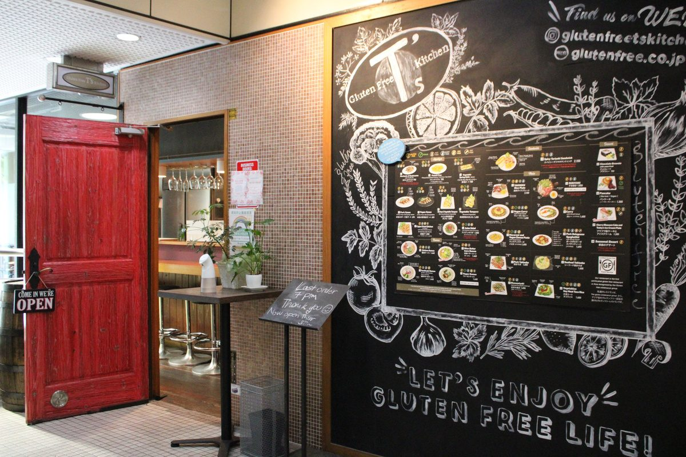
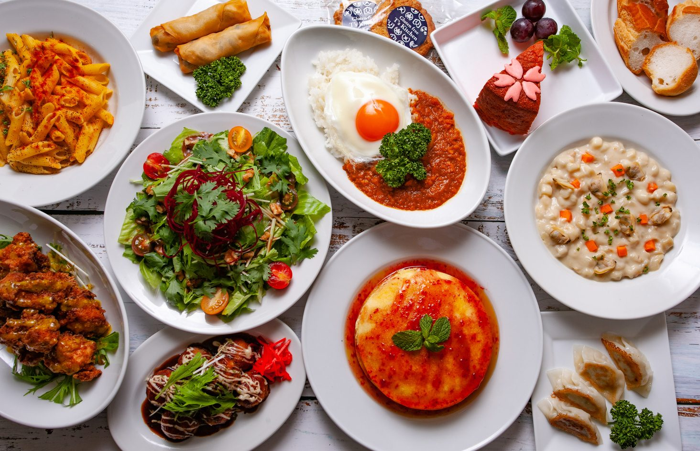
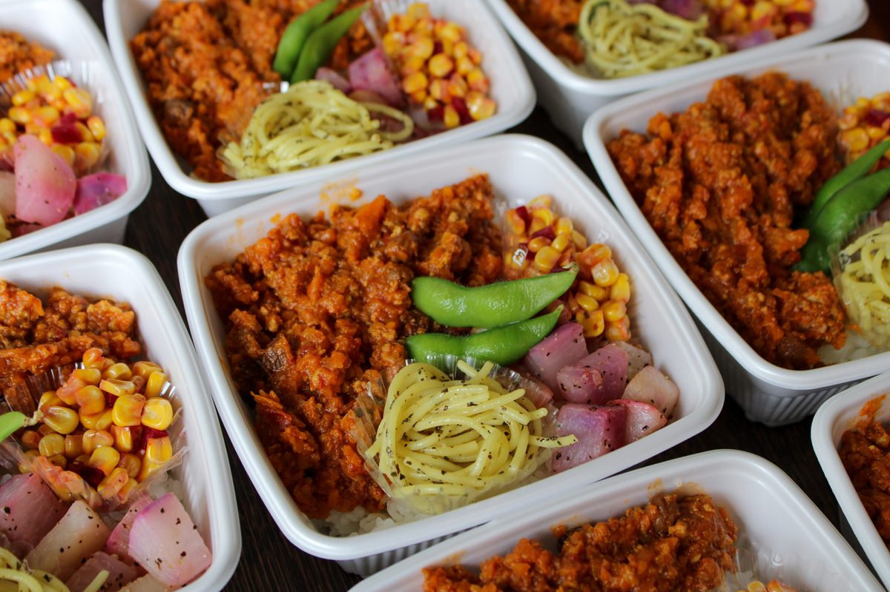

ようこそ、T’sへWelcome to T’s食の制限から、
可能性を味わうレストランです。From dietary restrictions
to delicious possibilities.
グルテンフリーを必要とする方々が、
笑顔になることを目指して。Our goal is to bring smiles to everyone who needs gluten-free food.
8名以上のご予約の際は事前にご連絡くださいFor groups of 8 or more, please contact us in advance.
きょうのお店Today’s shops
今の営業状況の目安です。売り切れの場合は、早めに閉店することがあります。A guide to what is open right now. We may close early if we sell out.
原宿店HarajukuNEWNEW東京都渋谷区神宮前4-28-14 シャンゼリゼ原宿 地下1階B1F Champs-Élysées Harajuku, 4-28-14 Jingumae, Shibuya-ku, Tokyo
平日ランチWeekday lunch 12:00–16:00（L.O. 15:00）
平日ディナーWeekday dinner 17:00–22:00（L.O. 21:00）
土・日Sat & Sun 12:00–22:00（L.O. 21:00）
定休日：水曜日Closed on Wednesdays
六本木店Roppongi〒106-0032 東京都港区六本木7-8-5 2階2F, 7-8-5 Roppongi, Minato-ku, Tokyo 106-0032
ランチLunch 12:00–16:00（L.O. 15:00）
ディナーDinner 17:00–22:00（L.O. 20:30）
定休日：火曜日Closed on Tuesdays
上野広小路店Ueno-Hirokoji朝7時〜Open from 7am〒101-0021 東京都千代田区外神田5-3-35-3-3 Sotokanda, Chiyoda-ku, Tokyo 101-0021
モーニングBreakfast 7:00–9:30（L.O. 9:00）
ランチLunch 12:00–16:00（L.O. 15:00）
ディナーDinner 17:00–22:00（L.O. 20:30）
年中無休（水曜日はモーニングのみ）Open daily (breakfast only on Wednesdays)
キャンセルポリシー：席数が限られているため、ご予約日の7日前から、1組につき3,000円のキャンセル料がかかります。直前のキャンセル・人数変更は返金できません。Cancellation policy: As seating is limited, a fee of ¥3,000 per group applies from 7 days before your reservation date. Last-minute cancellations and changes in party size are non-refundable.
私たちのレストランについてAbout our restaurant
アジアで初めて、グルテンフリーの認証を取得したレストランです。We were the first restaurant in Asia to receive gluten-free certification.
- グルテンフリー100% gluten-free小麦・大麦・ライ麦を使わない料理と飲み物を提供しています。Every dish and drink is made without wheat, barley or rye.
- 他のアレルギーにもOther allergies複数の食物アレルギーをお持ちの方は、スタッフにお申し出ください。If you have multiple food allergies, please let our staff know.
- 材料についてのご注意About our ingredients一部の材料は、小麦を扱う工場で製造されています。ご不明な点はお気軽にご質問ください。Some ingredients are produced in facilities that also handle wheat. Please ask us if you have any questions.

お店の日常と、つくり手の発信Daily life, and the people behind it
YouTube
お店の紹介やグルテンフリーの作り方を動画で。（文章は仮）The restaurant, and how we cook gluten-free, on video. (draft)
動画のURLを下の欄に貼ると入りますPaste a video URL below
@glutenfreetskitchenInstagram @takako_glutenfree_world
オーナーのたかこが、毎日のグルテンフリーを綴っています。（文章は仮）Our owner Takako shares her everyday gluten-free life. (draft)
投稿のURLを下の欄に貼ると入りますPaste a post URL below
フォローするFollow
ケータリング・お弁当Catering & Bento
パーティー、会議、イベントに。みんなで同じものを、安心して食べられます。For parties, meetings and events — so everyone can enjoy the same meal, worry-free.
- グルテンフリーが基本、他のアレルギーにも対応
- ベジタリアン・ヴィーガンもご相談ください
- ご予約は5日前まで
- Gluten-free at its core, with other allergies accommodated
- Vegetarian and vegan options available
- Please order at least 5 days in advance
 アジア初
アジア初
GIG認証First GIG-certified
in Asia プロダクト・オブ・ザ・イヤー
プロダクト・オブ・ザ・イヤー
2020 グランプリProduct of the Year
2020 Grand Prix フードアクションニッポン
フードアクションニッポン
アワード2019Food Action Nippon
Award 2019 トリップアドバイザー
トリップアドバイザー
東京No.1（2019）Tripadvisor
No.1 in Tokyo (2019)